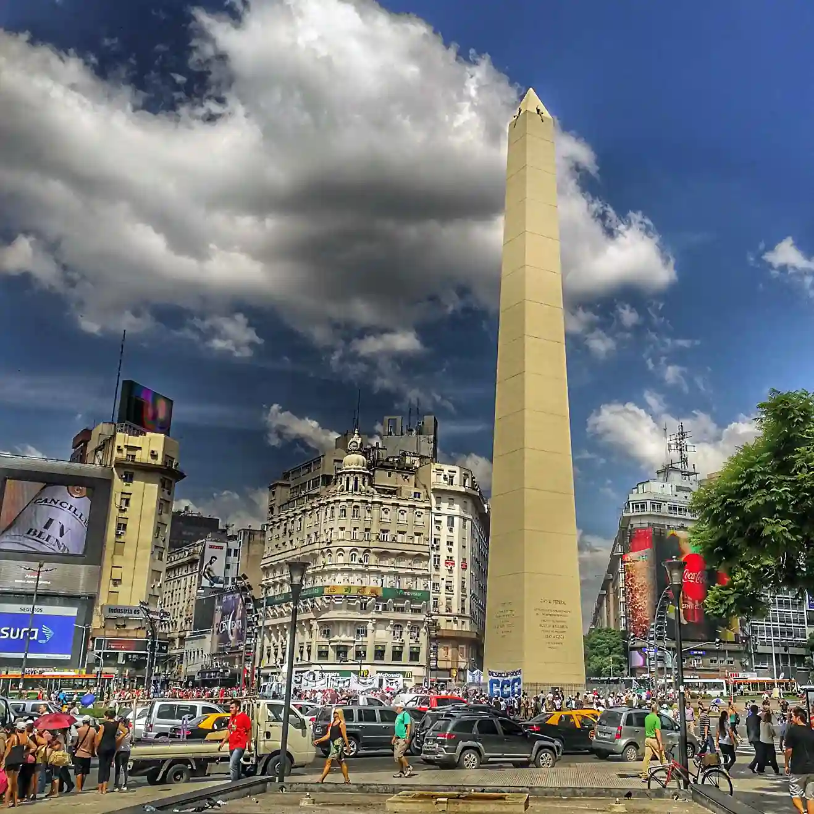

Built in 1936
It was built in record time to commemorate the 400th anniversary of the first founding of Buenos Aires.

Strategic Location
It is located at the intersection of two of the most important avenues: Corrientes and 9 de Julio. It was conceived as a modern icon.

Restorations
It has been restored several times throughout history, the most recent being in 2020 on the occasion of its anniversary.

Center of Celebrations
It is the chosen place for sports celebrations, protests, and cultural events. An undeniable symbol of Buenos Aires' identity.